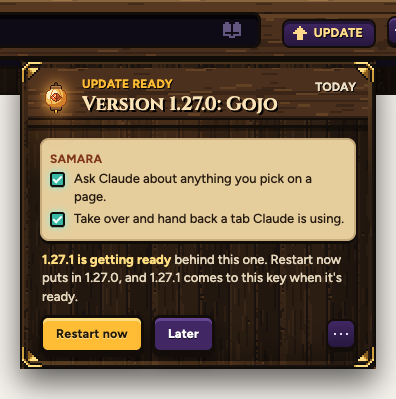
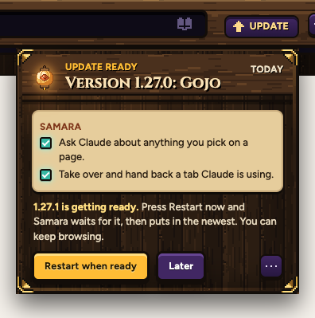

a1.27.0 READY
When a newer version comes out while one is ready, the key no longer disappears.
The key and tray here are the real ones, drawn by Samara itself. Only the new words are put in.
1.27.0 is ready. Then 1.27.1 comes out: Samara throws 1.27.0 away and the key is gone until 1.27.1 is built. On your Mac that can take a while, so it looks broken.
The key is gone.
Either way the key stays, and the tray says a newer one is on its way.

You get 1.27.0 right away. 1.27.1 comes to the key later, as its own update.

Press it once. Samara restarts when 1.27.1 is ready and puts in the newest.